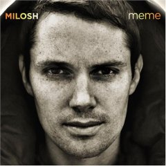

I was wondering if anyone here has heard of or listens to Milosh. I just got his most recent CD, Meme, today and I'm really digging it. I never was much of an electronica type of guy, but something about this artist is making me come around. The tracks on Meme tend to be sad and melencholic, but instead of becoming depressed as I listend to them, I found them incredibly calming and relaxing.
